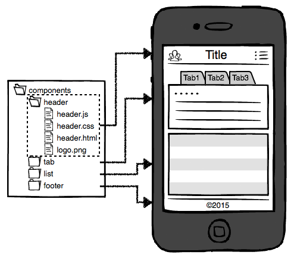
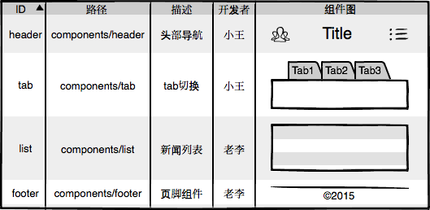

「看见音乐」
前端开发的困境与畅想
为什么要有这次分享？
- 讲一讲业界前端开发的现状
- 讲tu述cao看见音乐前端的困境
- 寻求各位后端大牛的配合以及帮助
写在开始之前
- 求同存异，创造大和谐
- 暂且宏观地讨论问题
- 分析利弊，而不是对错
业界前端开发的现状
- 工程化
- 组件化
前端开发工程化
外因
- 资源复杂：HTML/CSS/JS/Img/Swf
- 项目越来越大，页面越来越多
内因
- 基础设施越来越完善
- 自动化测试，可视化开发，团队协作
前端工程化应运而生
- 目录结构
- 代码编写
- 构建工具
- 代码规范/校验
- 代码测试
目录结构
```
项目一
├── /dist/ # 代码打包目录
├── /node_modules/ # node依赖包
├── /src/ # 源码目录
│ ├── /pages/ # 页面
│ │ ├── /page1/
│ │ │ ├── 1.html
│ │ │ ├── 1.scss
│ │ │ ├── 1.js
│ ├── /components/ # 公用组件
│ │ ├── /LeftBar/ # 侧边栏
│ │ │ ├── bar.html
│ │ │ ├── bar.scss
│ │ │ ├── bar.js
│ └── /public/ # 公用JS、样式、图片、字体资源
├── webpack.config.js # 构建工具的配置文件
└── package.json # node 包文件
```
代码编写方式
所见即所得 => 预先编译
- SASS/LESS-CSS-Autoprefixer
- CoffeeScript/TypeScript-JS
- ES6-Babel-ES5
开发工具
- Node/MockServer
- WebPack/Grunt/Gulp/Browserify
- Livereload/BrowserSync/HotReplaceModule
- ChromeDevTool
代码规范/校验
- JSLint/ESLint/CSSLint
- AirBnb/Best Practice
代码测试
- PhantomJS/Mocha/Chai
- Karma
前端开发组件化
- 什么是组件化？
- 与模块化的区别与联系？
- 目的是什么？
- 利与弊
组件化的定义
- 页面基本按照组件来分，组件是最小的开发单位
- 每个组件内维护自己的HTML/JS/CSS/Img等资源
模块化与组件化的区别与联系
| 模块化 | 组件化 | |
|---|---|---|
| 对象 | JS/CSS | HTML-CSS-JS.. |
| 标准 | AMD/ES6 Modules | WebComponents/R... |
| 主要目的 | 复用 | 分治 |
模块化是组件化的基础
组件化的目的
分治，提高可维护性
组件化的利与弊
| 利 | 弊 |
|---|---|
| 便于维护 | 对于工程师要求高 |
| 工具 | 缺乏标准 |
| 开发爽 | 老旧项目重构工作量大 |
| 可拓展 | 对工程化要求高 |
看见前端的困境
- 模块化几乎没有
- 项目目录结构老旧
- 资源引用不清晰
- 工程化的探索几乎没有
结果：。。。。
如何突破困局？
- 新项目应用工程化
- 老项目分组件重构
各位后端带带我

可能出现的问题？
发布流程？
工作量？
新目录结构与现有的目录结构可以兼容吗？